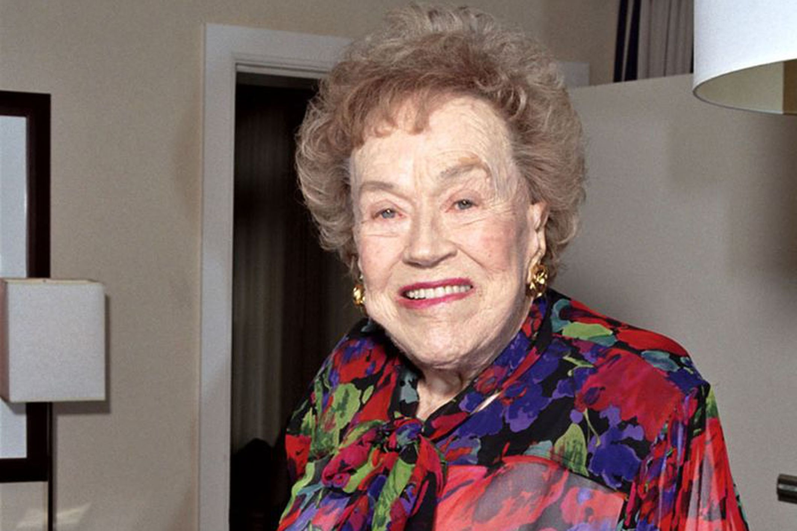

Success Stories in Food Making
Inspiring Journeys of Chefs Who Made It Big in the Food Making World:
chef Gordon Ramsay

Gordon Ramsay's culinary journey is nothing short of inspiring. With a passion for food that began in his childhood, he went on to become one of the most well-known chefs in the world. Despite early struggles and setbacks, Ramsay's dedication to his craft has earned him multiple Michelin stars, and he has built a global empire of restaurants, cookbooks, and television shows.Chef and TV star Gordon Ramsay is encouraging cyclists to put their safety first after experiencing his own terrifying accident. The 57-year-old posted a video and photos to Instagram on June 15 detailing the crash, which occurred the previous week. In the short clip, he raised his chef jacket to show a bruise covering the entire left side of his torso. “Honestly, you’ve got to wear a helmet.
view detailschef Massimo Bottura
Massimo Bottura is known for his creative approach to traditional Italian cuisine. His restaurant, Osteria Francescana, has earned three Michelin stars and is regularly ranked among the best in the world. Bottura's journey to success has been marked by a combination of creativity, passion, and the willingness to challenge culinary conventions.Massimo Bottura needs little introduction. You might have seen him on Stanley Tucci’s show Searching for Italy or Chef’s Table on Netflix. An iconoclast who takes the ingredients and flavors he grew up eating in Modena and reinterprets them in inspiring and thought-provoking ways, he’s the visionary behind Osteria Francescana, which was ranked the best restaurant in the world on the 50 Best Restaurants list in 2016 and 2018 and is still the only restaurant in Emilia Romagna with three Michelin stars.
view detailsChef Julia Child
Julia Child was instrumental in introducing French cuisine to the American public. Despite starting her culinary career later in life, she became a beloved television personality and cookbook author. Child's influence on the American food scene is immeasurable, and she is credited with making gourmet cooking accessible to everyday home cooks.Julia Child was a groundbreaking figure in American culinary history, known for elevating French cooking to a popular art form throughout the United States. Born on August 15, 1912, in Pasadena, California, she initially pursued a career in writing before shifting her focus to the culinary arts. After studying at Le Cordon Bleu in Paris and co-authoring the monumental cookbook "Mastering the Art of French Cooking", published in 1961, Child quickly became a culinary icon. Her approachable teaching style and charming personality captivated audiences and inspired generations of home cooks, leading to the successful television series "The French Chef".
view details